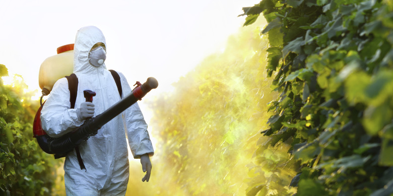
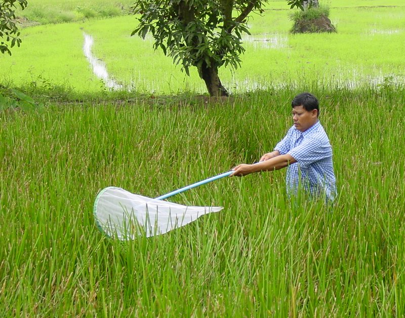

Step 1: Land Preparation
The land is plowed and leveled to ensure proper water management. Organic or chemical fertilizers are added to enrich the soil.
The land is plowed and leveled to ensure proper water management. Organic or chemical fertilizers are added to enrich the soil.

High-quality seeds are selected for planting. Seeds are either directly sown or transplanted from nurseries.
Rice requires a lot of water, so fields are flooded with water. Proper irrigation systems are maintained to ensure consistent water supply.
Weeds are removed manually or with herbicides. Pests are controlled using natural predators or pesticides.
Rice is harvested when the grains are mature and golden. Harvesting is done manually or with machines.
The harvested rice is threshed to separate the grains from the stalks. Grains are dried, milled, and polished before packaging.